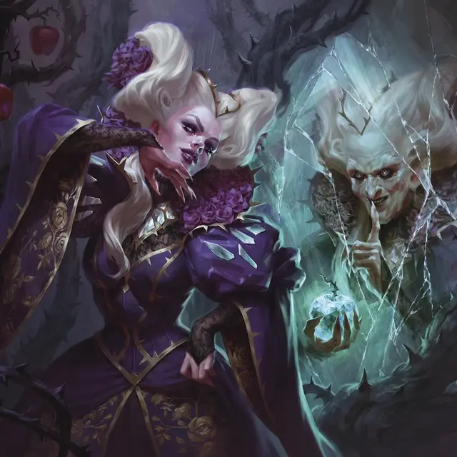

Ведьма Данбарроу
Dunbarrow Witch
Средний Гуманоид, нейтрально-злой

Класс Доспеха 12 (15 с доспехом мага)
Хиты 72 (16к8)
Скорость 30 футов
| мод | спас | ||
|---|---|---|---|
| СИЛ | 12 | +1 | +1 |
| ЛОВ | 14 | +2 | +2 |
| ТЕЛ | 11 | +0 | +0 |
| мод | спас | ||
|---|---|---|---|
| ИНТ | 16 | +3 | +3 |
| МДР | 15 | +2 | +5 |
| ХАР | 20 | +5 | +6 |
Навыки Магия +6, Природа +6
Чувства пассивное Восприятие 12
Языки Общий, плюс один любой язык, Сильван
Опасность 5 (1800 опыта)
Бонус мастерства +3
Особенности
Существа-компаньоны. Ведьмам Данбарроу служат различные существа. Нередко можно увидеть воронов [raven] и летучих мышей [bat], порхающих под пологом, кошек [cat] или выдр, снующих в подлеске, чтобы доставить сообщения союзникам или противникам через болото. Некоторые ведьмы оживляют связки палок и корней, чтобы выполнять за них поручения по болоту, в то время как другие оживляют мебель, оружие или другие предметы.
Не стесняйтесь создавать встречи с ведьмами, которые включают в себя дополнительных существ, таких как оживлённые доспехи [animated armor], летающие мечи [flying sword], ковёр удушения [rug of smothering] или крошечных Зверей, действующее как шпионы.
Действия
Мультиатака. Ведьма совершает две атаки Ядовитым кинжалом. Она может заменить одну из этих атак Использованием заклинаний.
Ядовитый кинжал. . Дальнобойная или рукопашная атака оружием: +5 к попаданию, досягаемость 5 фт. или дистанция 20/60 фт., одна цель. Попадание: 4 (1к4 + 2) колющего урона плюс 21 (6к6) урона ядом.
Превращающая смесь (1/день). Ведьма швыряет склянку с жидкостью в точку на расстоянии до 20 футов от себя, которая разбивается, выпуская облако магического дыма, заполняющее сферу радиусом 10 футов. Каждое существо в этой области должно преуспеть в спасброске Мудрости Сл 16, иначе превратится в существо, будто оказалось под действием заклинания превращение [polymorph], трансформируясь в одну из следующих форм (бросьте 1к4):
• 1 — летучая мышь [bat];
• 2 — лягушка [frog];
• 3 — ящерица [lizard];
• 4 — крыса [rat].
Эта трансформация длится 1 час или до тех пор, пока хиты существа в новой форме не упадут до 0.
Разбитые осколки. Ведьма нацеливается на точку, которую видит в пределах 30 футов от себя. Воздух в этой точке волшебным образом превращается в зеркало, а затем разбивается разлетаясь осколками 15-футовым конусом, исходящим из этой точки. Каждое существо в этой области должно совершить спасбросок Ловкости Сл 16, получая 25 (10к4) урона силовым полем при провале или половину этого урона при успехе.
Использование заклинаний. Ведьма может накладывать следующие заклинания, используя Харизму в качестве базовой характеристики для заклинания (Сл спасброска заклинания 16):
• Неограниченно: доспехи мага [mage armor] (только на себя), фокусы [prestidigitation];
• 2/день каждое: почтовое животное [animal messenger], очарование личности [charm person], жуткий смех Таши [tasha's hideous laughter];
• 1/день каждое: проклятие [bestow curse], рассеивание магии [dispel magic].
Описание
«Вкусите сладость, дыханьем за дыханье. Держите баланс, смертью за смерть».
— Заклинание ведьмы Данбарроу
В туманных болотах Данбарроу действуют ведьмы диких земель Элдраина. Они жаждут власти любыми способами, и они не прочь обмануть, предать или вступить в союз с теми, кто по их мнению, приблизит их к этой власти.
Большая часть магии ведьм Данбарроу совершается в котлах и используется в виде яда или зелья. Самые агрессивные заклинания ведьм имеют форму разбития зеркал.